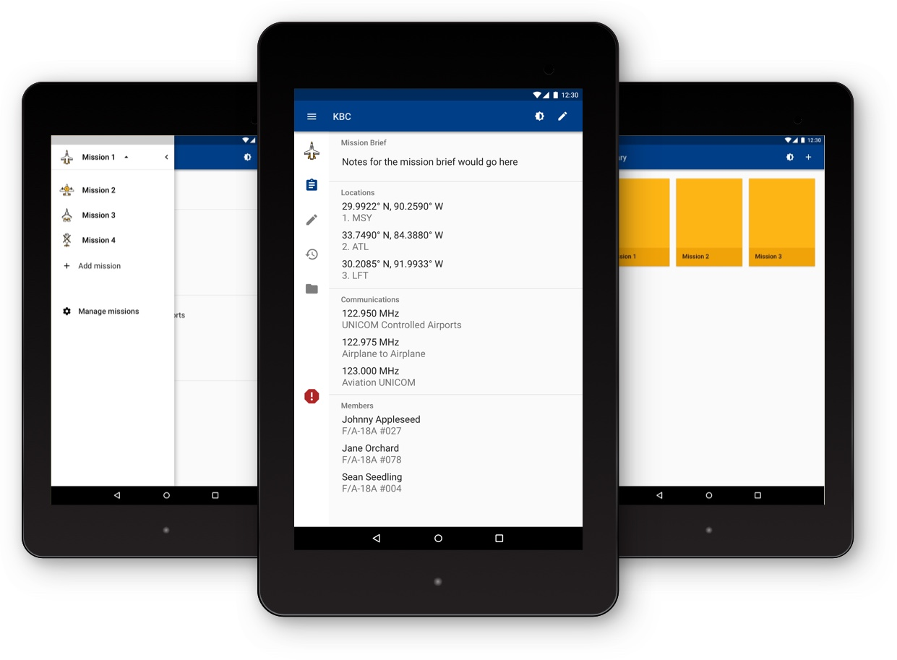

US Navy Pilot Experience
Digitizing the pilot's mission
While on missions, fighter jet pilots use kneeboard cards (KBC). KBCs consist of pieces of paper with flight information clipped to the pilot's leg during flight that they have to take notes on, as well as a large manuals (think the size of phone books) that they have to refer to during flight.
At Big Nerd Ranch, I had the opportunity to design a digital version of KBCs so that pilots would have easier access to crucial data during flight.
Solution
The App
Role
UX Designer, Visual Designer
Details
Big Nerd Ranch Design Team, 8 weeks
Tools used
Sketch, Principle, Illustrator, Pencil & Paper
Problem
How might we create a digital version of kneeboard cards that does not obstruct the pilot's mission during flight
Users
Fighter Jet Pilots
Note: no classified information is presented in this case study. Any images/information used are public knowledge (found via a quick online search) and are placed in wireframes to demonstrate a concept.
All-in-one Location for Missions
Users will be able to view all mission information from one app. This includes: mission data, approach plate information, any documents required, and a scratch pad to take notes on.
Creating New Missions
Users will be able to create new missions within the app. A wizard will take them through the necessary steps and remind them what information is required on a mission.
Manage Missions
Users will be able to not only add new missions but also remove any missions they do not need anymore.
Design
Interaction
Navigating within the app
There were various alternatives for navigation: side navigation, bottom navigation, tab bars, and mini navigation. We decided on the mini navigation so that pilots could quickly switch between tabs.
Bottom Bar
Tab Bar
How to make sure pilots could see the text
Folowing Material Design guidelines for typography, the text would have been way too small for pilots to see. Instead, we enlarged the text by 8sp within the list item to increase visibility while in flight.
Standard Material Design Typography
Enlarged Text
How to show missions
Originally, we wanted to keep a library with cards for the user to select the mission. However, to keep consistency with Material Design, we decided to use the "Accounts" feature for the mini navigation to show the missions.
Library Option
List Option using native "Accounts" list
How to create missions
Creating a mission also had multiple options: using a long form or using a wizard. We ended up deciding on the wizard because it created a more fluid experience as the user steps through each section. Each section has crucial information to the mission and we wanted the user to be able to focus on it to add the correct pieces.
Create mission via wizard
Create mission via long form
Visual Design
Color scheme was inspired by the official US Navy official colors. Variations of the colors were added to allow a smooth cohesiveness for the user.
Icons
To represent the planes, I thought of two approaches. One using images of the planes and another using icons.
Interface Design
Thoughts
This was a challenging project because we were designing for fighter jet pilots that would be using this application while in air. At the same time, we had to keep Material Design Guidelines constantly in our mind. This project helped exercise my ability to problem solve within constraints.